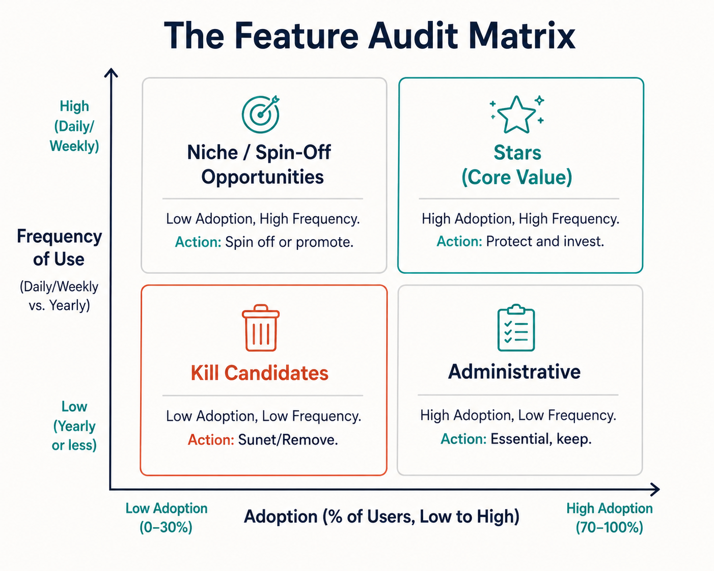
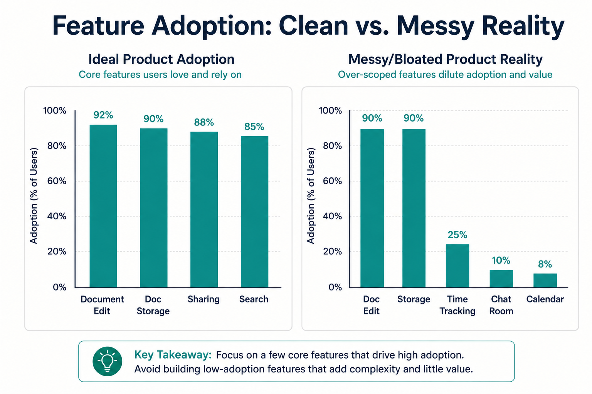
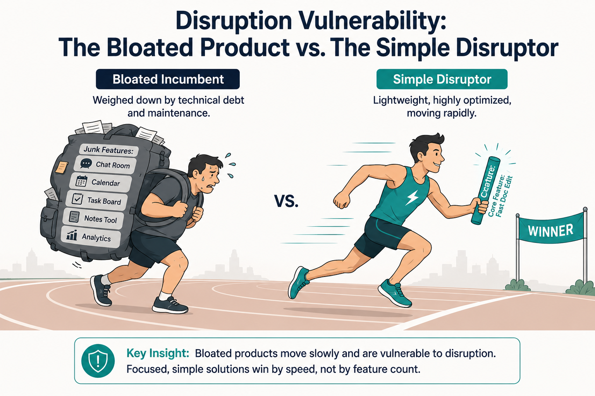
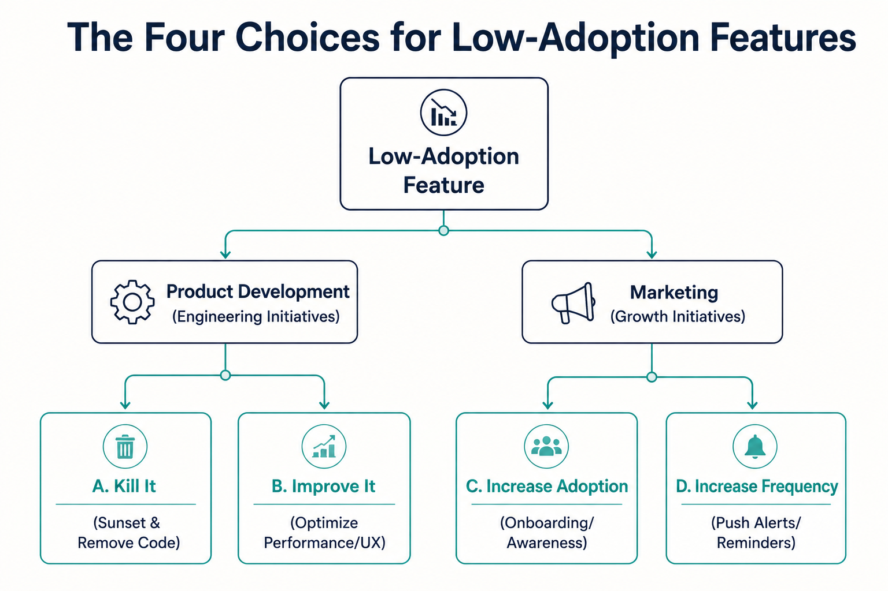
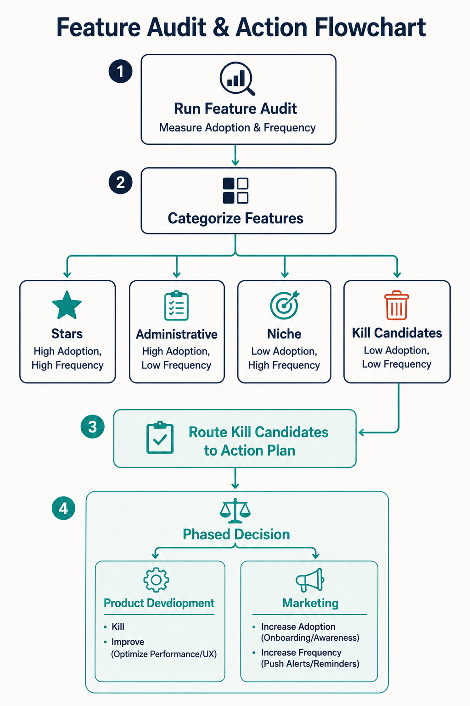

Your goal
Construct and interpret a Feature Audit Matrix using user adoption and frequency of use, identify product vulnerability to disruption, and apply the Four Choices framework to make sunsetting or improvement decisions.
Lecture overview
Most Product Managers inherit existing products rather than building them from scratch. Before planning new features, a PM must audit the existing product to understand how users interact with its capabilities and identify feature bloat.
Central argument
Product success can be a lousy teacher, leading teams to build unnecessary features that result in feature bloat. An inherited product must be evaluated through a feature audit to identify which features deliver core value and which are underperforming. Unused features must be improved, marketed, or killed; carrying unnecessary features dilutes product focus, increases code maintenance costs, and makes the product vulnerable to simpler, highly optimized disruptors.
1. The Feature Audit Matrix
A feature audit maps every product feature onto a 2x2 grid based on two key axes:
- Adoption (X-Axis): What percentage of your customer base actually uses the feature.
- Frequency (Y-Axis): How often active users engage with the feature (e.g., daily, monthly, or yearly).

20-feature-audit-matrix.png
A 2x2 grid displaying Frequency of Use on the Y-axis and Adoption (% of users) on the X-axis. Quadrants are labeled: Stars (top-right), Administrative (bottom-right), Niche/Spin-off (top-left), and Kill candidates (bottom-left).
The Four Quadrants
- Stars (Top-Right): High adoption, high frequency. These are the core value drivers of your product that you should never neglect.
- Administrative (Bottom-Right): High adoption, low frequency. Crucial, utility tasks (like password reset) that everyone uses but rarely. They must be kept.
- Niche (Top-Left): Low adoption, high frequency. Used often by a small segment of users. Offers opportunities to spin off separate products or drive adoption to the mainstream.
- Kill Candidates (Bottom-Left): Low adoption, low frequency. Failed or unvalidated features that clutter the product and codebase. They should be killed off.
2. Real-World Product Adoption and Feature Bloat
Every PM hopes feature adoption looks clean and widespread, but in reality, products become bloated and messy. Succesful launches of core features breed overconfidence, leading teams to build additional features (like calendars or chat rooms) without validating if they solve critical user pains.

20-clean-vs-messy-adoption.png
Side-by-side bar charts. Chart A shows high, clean adoption across 4 core features. Chart B shows the messy reality of feature bloat, with high adoption on core features, but failing adoption on botch-launched additions.
3. Disruption and the Threat of Feature Bloat
Feature bloat is not just an interface issue; it represents a major security vulnerability for the business. When your product carries a single, popular workflow wrapped inside a complex shell of unused features, it becomes highly vulnerable to **disruption**.
A simple competitor can build a single-purpose product that focuses on your one key feature, making it faster, simpler, and superior. You will struggle to compete because your engineering resources are tied up maintaining the technical debt of your unwanted "junk" features.

20-disruption-vulnerability.png
Visual comparison between a heavily loaded runner ("Bloated Product") carrying a heavy backpack of unused features, and a lightweight focused runner ("Simple Disruptor") carrying only a single, optimized core baton.
4. The Four Choices for Low-Adoption Features
When you identify underperforming features, you have four choices, split between engineering changes (Product Development) and marketing activities:

20-low-adoption-choices.png
A decision tree branching from a low-adoption feature into Product Development (Kill, Improve) and Marketing (Increase Adoption, Increase Frequency) strategic choices.
Product Development Initiatives (Dev Team)
- Kill It: Remove it entirely. Eliminates technical debt and simplifies the UX.
- Improve It: Redesign or optimize performance to help the users who actively rely on it.
Marketing Initiatives (Growth Team)
- Increase Adoption: Drive awareness among users who don't know the feature exists.
- Increase Frequency: Prompt existing users to use it more often via push notifications, email alerts, or tips.
Comparison: Product vs. Marketing Initiatives
| Strategic Choice | Primary Owner | Target Metric | Typical Action |
|---|---|---|---|
| Kill It | Product / Engineering | Core Code Complexity | Deprecate feature, remove UI entry, clean up codebase. |
| Improve It | Product / Engineering | Feature Usability / Performance | Redesign workflows, optimize load times, fix bugs. |
| Increase Adoption | Product / Marketing | User Adoption Rate (%) | Update product tour, highlight feature in marketing campaigns. |
| Increase Frequency | Product / Marketing | Sessions per User / Event Frequency | Implement email triggers, push notifications, or UI badges. |
Practical Product Management example
Situation
A PM inherits a collaborative project management tool that has been on the market for three years. The product has solid document sharing and file storage features (used by 92% of active users daily). However, the team has also built a time-tracking widget (used by 12% of users daily) and a group calendar feature (used by 3% of users monthly). The calendar code is fragile and frequently causes system slowdowns.
Decision
The PM conducts a feature audit and classifies the features. Document Sharing & Storage are categorized as Stars. The Time-Tracking Widget is classified as a Niche feature (highly valuable for freelance agencies). The Group Calendar is classified as a Kill Candidate due to low adoption, low frequency, and technical debt. The PM decides to kill the calendar completely and update the onboarding tour to increase adoption of the time-tracking widget for agency accounts.
Reasoning
The calendar is not operationally essential and causes system performance risks. Retaining it increases technical debt, making the product vulnerable to simpler, fast document-sharing competitors. The time-tracking widget has verified utility for a specific segment, making adoption-driving onboarding updates a high-leverage growth tactic.
Consequence
Removing the calendar simplifies the user interface and immediately resolves the system slowdowns, reducing engineering maintenance tickets by 15%. Updating the onboarding tour increases time-tracking adoption from 12% to 28% within three months, locking in freelance clients who now use the platform as their primary agency workflow tool.
Transferable lesson
Do not let sentimentality or sunk costs keep dead features alive. Kill features that fail to achieve adoption to protect product performance and focus resources on core value and high-leverage niche features.
Common misunderstandings
"Every feature with low frequency of use should be killed"
Correction: Frequency of use must be evaluated alongside user adoption and necessity. Administrative features like password reset or account deletion have extremely low frequency of use, but they are essential for operations. Only kill features that have both low adoption and low frequency and are not operationally essential.
"Killing a feature is a waste of the engineering hours spent building it"
Correction: This is the Sunk Cost Fallacy. Keeping a failed feature in the product does not recover the cost of building it. Instead, it creates ongoing costs: developers must test it during updates, write documentation for it, fix its bugs, and carry it as technical debt, which slows down future development.
"A feature audit is a one-time launch task"
Correction: A feature audit is an ongoing lifecycle activity. Products naturally accumulate feature bloat over time as teams attempt to solve new problems. PMs must run feature audits periodically to keep the product focused, performant, and safe from disruptors.
Key concepts and definitions
- Feature Audit Matrix: A strategic 2x2 grid that plots features based on user adoption (percentage of users) and frequency of use to determine product health.
- Feature Bloat: The accumulation of unnecessary features that add product complexity, complicate the user interface, and increase technical debt without adding value.
- Sunk Cost Fallacy: The tendency to continue investing in a failed feature or project because of the resources (time, money, effort) already spent on it.
- Disruption Vulnerability: The risk of losing market share to a simpler, faster competitor who focuses entirely on doing one core thing exceptionally well.
Key takeaways
- PMs almost always inherit products rather than starting from scratch, making a feature audit the necessary first step on the job.
- The Feature Audit Matrix plots features based on user adoption (X-axis) and frequency of use (Y-axis) to diagnose product health.
- Core value "Star" features have high adoption and frequency, representing the primary reasons users choose the product.
- Administrative features have high adoption but low frequency, and because they are operationally essential, they must not be removed.
- Niche features (low adoption, high frequency) offer opportunities to spin off separate products or drive adoption to the mainstream.
- Feature bloat occurs when teams continually build new features without validation, leaving the product carrying failed, complex codebases.
- Bloated products are vulnerable to disruption by simple competitors who optimize a single core feature and avoid carrying unwanted feature weight.
- Handling low-adoption features requires choosing to kill or improve them (Product Development), or increase their adoption or frequency (Marketing).
Visual summary

20-visual-summary.png
A flowchart displaying the progression from running the Feature Audit Matrix (Adoption vs. Frequency), to classifying features into quadrants, and finally routing low-adoption features into specific product development or marketing choices.
One-minute review
Plot Feature Usage: Perform a feature audit by mapping features on a 2x2 grid of Adoption (how many use it) vs. Frequency (how often). Sunsetting is Strategy: Core stars must be protected, administrative items are kept, niche items are optimized, and low-adoption/low-frequency features should be sunsetted (killed) to eliminate technical debt. Four Strategic Choices: For underperforming features, choose to Kill or Improve them (working with engineering), or Increase Adoption or Increase Frequency (working with marketing/growth).
Interactive Practice
Audit your understanding of feature categorization. For each scenario below, decide which quadrant of the Feature Audit Matrix the feature belongs to.